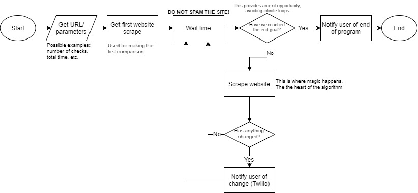

For this project, my team (Hudson and Liam) tasked me with writing the code for the Twilio communication system. At the time we made the actual webscraper, I didn't really know how it worked, but I provided input where I could as I learned more about webscraping for salvaging my IA. I feel like I could have been a much better contributor if I had known more about Python. My code is as follows:

Obviously, this piece of code imports the needed Twilio library.

This originally was a set of input functions so that the program could be used from the terminal. However, with Liam's GUI, that is no longer needed. Supposedly, the user is just puts their information in the Python file. Something seems to have happened with the fourth line of code in this segment which may or may not break the program, but I'm not sure.

I got this little piece of code from the tutorial that Twilio provides on how to use SMS. I honestly have no clue what it actually does, but in my files that consist of only the the Twilio Communicator System, it works and the desired text is sent to my phone.
I don't believe that I actually made anything flowchartable so I unfortunately do not have any flowcharts to show for my admittedly very limited contribution. However, here is the flowchart for the program as a whole. Other contributions were just simple bugfixing things to make sure everything was in working order.
